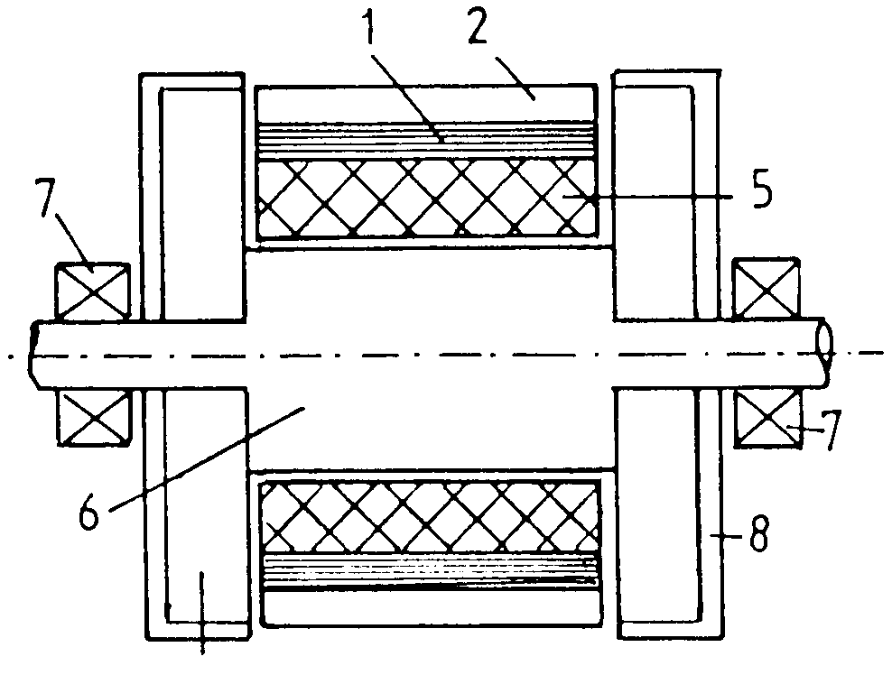

The following is a U.K. Patent granted to Harold Aspden on April May 8, 1996 with a publication date of September 6, 1995.
Abstract: A magnetic reluctance motor has a salient pole rotor interacting with stator poles to form, a machine operating on the magnetic reluctance principle. The machine incorporates a shaded-pole feature on the stator pole edges which performs eddy-current screening restricting magnetic flux transit between poles as they operate. This allows the magnetic attraction between the poles during the approach phase to drive the motor. A d.c. powered solenoid axially positioned intermediate two sets of rotor poles provides the magnetic polarization of the rotor core body to set up pole flux. The motor may include a permanent magnet fitted as a sleeve on the central part of the rotor core and the d.c. excitation of the solenoid then acts on the inner shaft section to magnetize it in the same direction as the permanent magnet and thereby augment the drive action whilst blocking flux closure from the magnet through the shaft.
This patent is based on the same patent application as that of granted U.K. Patent No. 2,289,994 (Ref. [1995d] in these Web pages). The difference is that this patent covers the feature of the coaxially-mounted solenoidal winding 5 which powers the machine, whereas the tilted pole feature providing the shaded-pole action is the subject of the invention of Patent No. 2,289,994.
